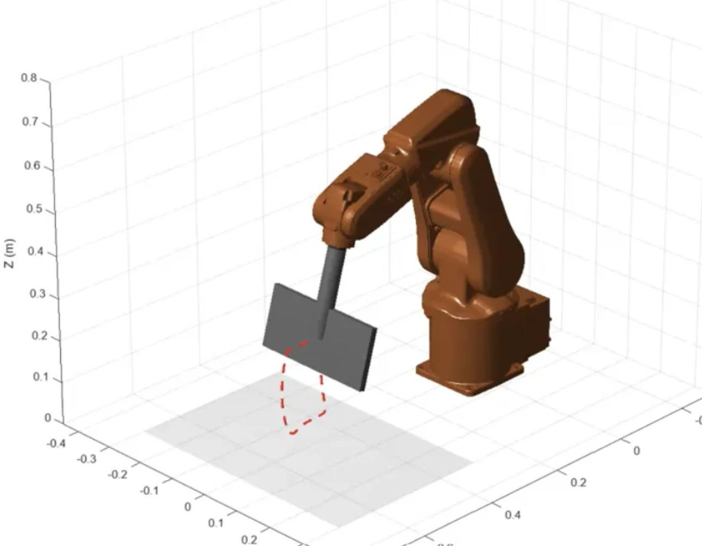
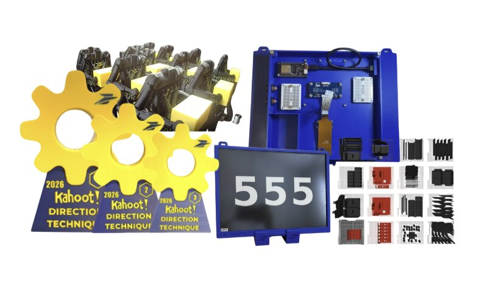
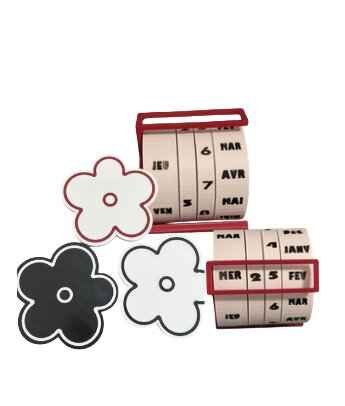
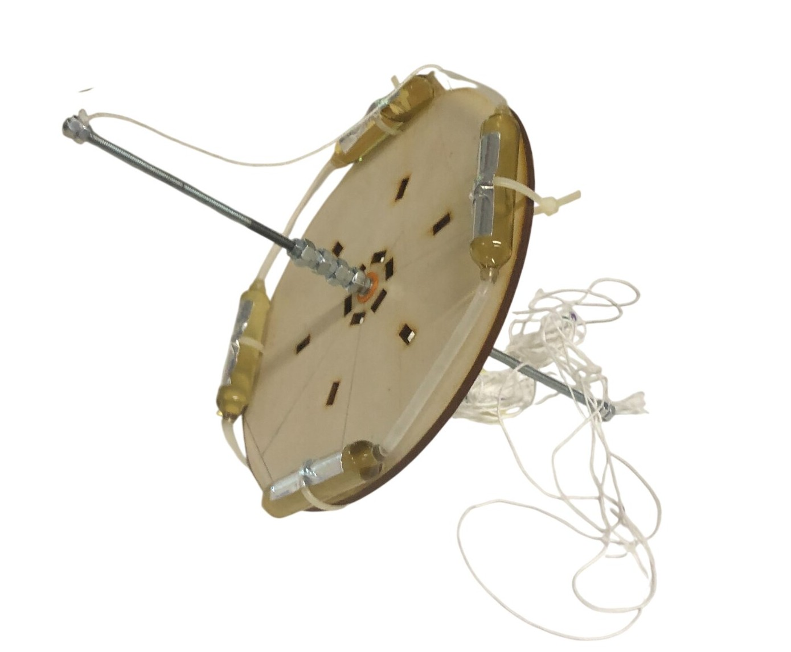

Formation
- MEC788 — Mécatronique : Systèmes intégrés et simulation sous Matlab.
- AER600 — Intro à l'aérospatiale : Propulsion, avionique/certification, aérodynamique, matériaux et structures aéronautiques.
- GTS504 — Ingénierie de la réadaptation : Conception biomécanique.
- SYS827 — Systèmes robotiques en contact (A2026) : Commande en force et interaction.
Formation scientifique pluridisciplinaire : mathématiques, physique, mécanique du point et du solide, thermodynamique, informatique et projets d'ingénierie (conception d'un dispositif de mesure du temps 100 % mécanique).
Expériences Professionnelles
- Conception d'un système de préhension robotisé multi-ventouses pour colis cartonnés (jusqu'à 20 kg) et polybags (3-4 kg) sur bras Fanuc.
- Réalisation des projets d'impression 3D du pôle Avant-Projets Innovants (VivaTech, série ARPI, boîtiers électroniques) et maintenance du parc Ultimaker.
Lecture de plans, usinage d'arbres de guidage, programmation CN et contrôle de tolérances.
Configuration de postes de travail, maintenance informatique et déploiement d'équipements.
Projets & Réalisations (Cliquez sur un projet pour voir l'étude complète)

Préhenseur robotisé multi-ventouses (La Poste)
Conception complète pour bras Fanuc : manutention de colis cartonnés jusqu'à 20 kg et polybags souples.
Voir les étapes, choix techniques et résultats →
Simulation Robotique & Contact sous MATLAB (ÉTS)
Modélisation d'un bras 6 axes ABB IRB 120 reproduisant la trajectoire et les efforts de l'œuvre Can't Help Myself.
Voir l'étude cinématique et dynamique →
Panda Drum automatisé & éducatif (Polytech)
Projet mécatronique d'équipe : frappe par solénoïdes, guidage lumineux par LEDs, écran LCD et Arduino.
Voir la vidéo et les détails techniques →
Fabrication additive & Prototypage (La Poste)
Figurines Wandercraft (VivaTech), mini-série de 12 modules RSE (ARPI), boîtier d'écran et trophées bicolores.
Voir les réalisations et défis →
Créations personnelles CAO & Impression 3D
Conception intégrale sous SolidWorks d'un calendrier perpétuel à rouleaux et de dessous de verre clipsables.
Voir la démarche de conception →
Clepsydre à tambour descendant (30 min)
Projet Bureau d'Études (Polytech Lille) : mesure du temps 100 % mécanique par gravité et écoulement hydraulique.
Voir la démarche et les essais →À propos de moi
Étudiante en 5e année à Polytech Annecy-Chambéry et en échange à l'ÉTS Montréal, je me spécialise en conception mécanique, mécatronique et industrialisation.
Curieuse, créative et rigoureuse, je recherche un stage de fin d'études de 6 mois dès février 2027 en Bureau d'Études ou industrialisation.
Compétences & Outils
Contact & Engagements
Responsable Communication BDE (2025-2026) : Création des visuels Instagram.
Courriel : leane.leroux95@gmail.com | Tél : +33 06 41 17 24 73